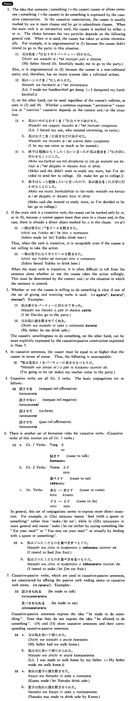

させる (B. 387)
- (ksa).
- 鈴木さんは娘を・に大学へ行かせた・行かせました。
- Mr. Suzuki made/let his daughter go to college.
- (ksb).
- 父は妹にピアノを習わせた・習わせました。
- My father made (or let) my younger sister learn to play the piano.
- (a).
- 久子は私を困らせた。
- Hisako made me have trouble. / Hisako caused me trouble.
- (b).
- このゲームはジムに勝たせようと思う。
- I think I'll let Jim win this game.
- (c).
- 友達は私にチップを払わせた。
- My friend made me leave (lit pay) a tip.
- (d).
- アンダーソンさんは子供達に好きなだけアイスクリームを食べさせた。
- Mr. Anderson let his children eat as much ice cream as they liked.
- (e).
- 私は冷蔵庫でミルクを凍らせた。
- I made milk freeze (I froze milk) in the refrigerator.
- (f).
- それは私にさせてください。
- As for that, let me do it.
